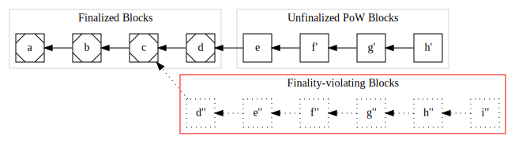

A Trailing Finality Layer for Zcash
This book introduces and specifies a Trailing Finality Layer for the Zcash network.
This design augments the existing Zcash Proof-of-Work (PoW) network with a new consensus layer which provides trailing finality. This layer enables blocks produced via PoW to become final which ensures they may never be rolled back. This enables safer and simpler wallets and other infrastructure, and aids trust-minimized cross-chain bridges. This consensus layer uses Proof-of-Stake consensus, and enables ZEC holders to earn protocol rewards for contributing to the security of the Zcash network. By integrating a PoS layer with the current PoW Zcash protocol, this design specifies a hybrid consensus protocol.
See how to Get Involved.
Status
This is an early and very incomplete protocol design proposal. It has not been well vetted for feasibility and safety. It has not had broad review from the Zcash community, so its status on any Zcash roadmap is undetermined.
Major Missing Elements
This design is at a very early stage and lacks substantial clarity around essential details. These details must be clarified before this proposal would be ready for the Zcash Improvement Proposals process. They include:
- PoS protocol selection,
- Issuance and supply mechanics, such as how much ZEC stakers may earn,
- A transition plan from current Zcash mainnet to this protocol design,
- The specifics of how PoW and PoS safely integrate,
- Security and safety analysis,
- Economic analysis,
- and more.
Next Steps
This design proposal is being developed by ElecticCoin Co as the first major milestone in our focus of deploying Proof-of-Stake to the Zcash protocol. Our rough near term plan for this proposal is as follows:
- Write a very high-level design overview which lacks many details but clarifies the general approach.
- Get early feedback from Zcash community and consensus protocol experts on this high level overview.
- If there are flaws so substantial that we decide the approach is infeasible, start over with a different PoS transition design.
- Otherwise, refine the high-level "overview" into a concrete, comprehensive proposal through multiple milestones with wide review.
- As the concrete proposal approaches maturity, draft one or more Zcash Improvement Proposals.
- Follow the general Zcash process for proposal/review/refinement.
- Follow the general Zcash governance process for proposal acceptance.
- If accepted, productionize the proposal in ECC products and collaborate with other implementors who implement the proposal.
- Celebrate when the proposal is activated on Mainnet. 🎉
TFL in Zcash's Evolution (TBD)
[Incomplete Placeholder]
Motivating Finality
In Zcash currently, consensus relies solely on PoW, which only provides probabilistic finality, rather than guaranteed finality.1 This style of consensus does not offer a guarantee that any given block may not be rolled back which may invalidate the transactions it contains. Instead, the probability that a block may be rolled back decreases as more blocks are mined subsquently on top of it.2
Let's walk through an example of how Zcash's current PoW with probabilistic finality can impede important use cases. Consider a PoW node which sees this block sequence at time T=0:
When should a user, wallet, or other system choose to act based on a transaction in a block?
For this example, let's assume a bridging system may have received a deposit for ZEC in block f and issued a corresponding number of proxy tokens on a different network.
At a later time, T=1, this same node may see a longer PoW chain which invalidates some previously seen blocks:
The node has observed a longer chain ending at block h', so PoW consensus calls for that new sequence to be treated as consensus. The previously seen blocks f and g are no longer part of the consensus history, and have been rolled back.
Impact of the Rollback
In our example, the bridging system acted in response to a transaction in the original block f at T=0. If the new sequence ending at h' no longer contains the deposit to the bridging system, the integrity of the bridge has been violated3; the associated proxy tokens may have already been used in a complex chain of Defi applications or deposited onto an exchange and sold, which would make any recovery impossible. The proxy tokens on the other network no longer correspond to the correct amount of ZEC on the Zcash network.
Rollback Complications
This example demonstrates how a lack of guaranteed finality can impede many useful real-world scenarios. In practice, systems and services which need greater assurances wait for more block confirmations.
This has several drawbacks:
- it doesn't remove the vulnerability, it only reduces the likelihood,
- different applications/services may require different block depths making it difficult to compose or chain together different applications/services,
- different block depth policies potentially confuse users, i.e. "why do I have to wait one hour for my deposit in this exchange, but only 30 minutes on that exchange?", and
- it introduces a delay which inhibits many useful applications.
In addition to these user-facing and economic drawbacks, correctly handling rollbacks makes the code for nodes, wallets, and other infrastructure more complex. Worse still, many systems may not have correct behavior for rollbacks at different depths, and since large rollbacks are rarer, these implementation flaws may not surface until there is a large rollback. While a large rollback would be disruptive all by itself, it becomes even worse when previously undiscovered bugs exacerbate the situation.
Trailing Finality Benefits
Trailing finality extends the existing PoW consensus so that older blocks become final, ensuring they cannot be rolled back, and by extension neither can any of the transactions they contain.
This directly addresses the first two flaws above: it completely removes the vulnerability and it ensures all systems which need finality behave consistently with each other.
As for delay, tailing finality also introduces delay since final blocks "trail behind" the most recent PoW blocks. This can be an improvement for some applications, but not others. For example, if the delay to finality averages around 10 minutes, then this would enable an improvement for an exchange which requires 60 minutes of PoW blocks for a deposit. On the other hand, it would not be an improvement for an application that needs finality faster than 10 minutes.
Finally, implementations can be simplified by relying on the guarantee of finality. For example, a wallet can describe any transaction as pending or final, and does not need to provide difficult and potentially confusing UX (and the supporting database sophistication) for handling rollbacks.
Footnotes
Throughout this book, when we say finality or final without other qualifiers, we specifically are referring to guaranteed finality or a guaranteed final block. Where we call out probabalistic finality we always use that qualifier.
The estimated probability of a rollback relies on a variety of PoW security assumptions, and can be violated in various conditions, such as in mining efficiency breakthroughs, compromises of the PoW challenge algorithm (e.g. hash function collision resistance failure), difficulty-adjustment-algorithm failures, sudden/surprise mining capacity increases, and so on. So the estimated probability can be violated in potential "black swan" events.
This discussion simplifies consideration of transaction rollback vs block rollback. When a block is rolled back, it is possible for some of the transactions contained in it to appear in new canonical blocks. The conditions when this can occur vs when it cannot are multifaceted and also subject to malicious influence, so for simplicity we assume all transactions within a rolled-back block are also rolled back.
Visualizing Trailing Finality
In the previous chapter we visualized a node's view of consensus in PoW and a valid rollback transition. When we consider a protocol combinging PoW with trailing finality, there are multiple possible transitions:
- PoW can make progress on discovering a new block,
- finality can make progress on finalizing a previously found block, and
- finality-constrained PoW rollbacks can occur.
However, unbounded PoW rollbacks may not occur, although they are valid in pure PoW.
Let's visualize a node's view of consensus through each of these kinds of transition to gain an intuition of the intended protocol's behavior.
Starting State
Let's begin at T=0 with a known-valid starting state:

This represents a sequence of blocks, similar to the first diagram in the previous chapter, except now we distinguish between finalized blocks (which have corner markings) and unfinalized PoW blocks.
In the intended protocol design, both PoW mining and finalization processes are concurrently making progress, so from this starting state we can observe either valid PoW mining progress or valid finaliztion progress.
Let's examine PoW progress first:
PoW Progress
At T=1 a new valid PoW block g has arrived:

Again, from this state either PoW or finality may make progress. For this example, let's assume finality makes progress next:
Finality Progress
At T=2 block d has become final:

PoW Rollback
Just as in vanilla PoW, rollbacks are possible so long as they involve no finalized blocks. To illustrate, we envision at T=3 the node discovers a new best PoW sequence endeing at h':

The blocks f and g from T=2 have been rolled back in favor of the sequence of f' → g' → h'. Because no final blocks are rolled back, this is a valid transition, just as for vanilla PoW.
Now let's consider an invalid attempt to rollback a final block:
An Invalid Finality Rollback
At T=4 the node learns of a new sequence ending in i'' where each header in the Proof-of-Work sequence is valid and demonstrates sufficient work accoring to pure PoW consensus:

The sequence d'' → e'' → f'' → g'' → h'' → i'' is invalid and rejected by the node because although it meets all PoW requirements, it does not extend from the most recent final block d and attempts to roll it back via d''.
Summary
Visualizing these possible transitions of a PoW-with-Trailing-Finality protocol helps provide an intuition about the intended protocols behavior.
Get Involved
We welcome contributions!
There are a variety of ways to contribute to this project:
Github
If you have a Github account, you can get hands on via the github repository for this book, including:
- Ask a Question - all questions welcome from basics to in-depth.
- Suggest an Improvement to the content, anything from typo fixes to major design change proposals.
- Report Rendering / Infrastructure Issues in case you're having trouble reading the content, viewing diagrams, rendering on your own computer, etc…
Zcash Forum
The Zcash Forum is a hangout for many Zcash enthusiasts. This is a good spot for more open ended discussion about this design proposal, alternatives, and other developments in Zcash.
Zcash R&D Discord
You can catch us on the Zcash R&D Discord in the #proof-of-stake channel.
Zcash Arborist Calls
The Zcash Arborist Calls are bi-weekly Zcash protocol development calls, where proposals like this are discussed. Feel free to come lurk, ask questions, or provide feedback or suggestions.
overview
overview text
Design at a Glance
The TFL is logically an extension of the Zcash consensus rules to introduce trailing finality. This page is a quick and (currently) hand-wavy summary of TFL from multiple lenses.
Trailing finality depends on a finalizing Proof-of-Stake subprotocol, so the resulting protocol is hybrid PoW+PoS consensus with two subprotocols.
Protocol Terminology
Because we analyze changes from the current protocol to a new hybrid PoW+PoS protocol, and furthermore the new protocol consists of subprotocols, we use the following terminology for distinctions:
- PoW+TFL: the overall complete, integrated consensus protocol specified in this book.
- NU5: the consensus protocol as of NU5.1
- PoW: the PoW subprotocol within PoW+TFL. Note that this is a different consensus protocol from NU5.
- TFL: the TFL subprotocol within PoW+TFL.
Subprotocols
The PoW+TFL hybrid consensus consists of two interacting subprotocols:
- PoW: this subprotocol is very similar to current Zcash mainnet consensus. It is a design goal of the TFL design to minimize changes to this subprotocol. Note: the shorthand "PoW" is potentially misleading, because this subprotocol is also responsible for the bulk of all supply and transaction semantic consensus rules.
- TFL: this is a new subprotocol which provides trailing finality via a finalizing PoS protocol.
Fully validating nodes must operate both subprotocols in an integrated manner. These subprotocols follow the design layed out in Ebb-and-Flow design.
Design Analysis Focus Areas
Analyzing this design focuses on four areas:
- The design of each subprotocol independently,
- The interaction between the two subprotocols idealized as an interface between subcomponents, and
- The whole as an integrated system.
Consensus
Consensus is specified in terms of the sub-consensus of each of the two subprotocols, PoW & TFL, along with the interface between the two, and finally in terms of system-wide / integrated consensus rules.
We also explicitly define design goals about which areas of consensus must not be impacted by a transition from NU5 to PoW+TFL.
Trailing Finality
The TFL extends the Zcash consensus protocol with Trailing Finality: TFL finalizes blocks that have been produced by PoW. See Visualizing Trailing Finality for an informal description of this.
When focusing on the PoW subprotocol, Trailing Finality introduces minimal changes to the subprotocol consensus: PoW has a mechanism for discovering block finality from TFL, and then it introduces a single new PoW subprotocol consensus rule constraint:
Rollbacks must not include any final blocks; equivalently: the best PoW chain must include all known final blocks.
There are no other changes to PoW subprotocol consensus specific to trailing finality, including no changes to any ledger rules about balances, transaction semantics, etc…
Proof-of-Stake
In order to achieve consensus on finality, the TFL uses a PoS protocol which provides absolute finality.
The PoS consensus area is where the bulk of complexity lies in terms of the interface between the PoW and PoS subprotocols because PoW, which is generally responsible for supply and transaction semantics. See The Subprotocol Interface below for more detail.
Footnotes
If new consensus changes are deployed to Zcash mainnet prior to PoW+TFL design finalization, this design must be updated to refer to the new delta (e.g. by reanalyzing all changes against NU6 or NU7, etc…)
Subprotocol Interface
The interaction between the two subprotocols is modeled as a message-passing interface with each subprotocol notifying the other of state changes. The sending subprotocol of a notification is authoritative so each notification enables the recipient to update necessary local state with the assumption that it is already validated according to the peer subprotocol's consensus rules.
Message Ordering
The ordering of notifications is strict in the sender-perspective only: if one subprotocol sends notifications A then B, then the recipient subprotocol must see A then B in that order.
However, the notifications have arbitrary ordering across subprotocols. For example if one subprotocol sends A then B and the other subprotocol sends X then Y, the first subprotocol may observe the ordering A, X, B, Y, while the other subprotocol may observe the ordering A, B, X, Y.
PoW → TFL: new_pow_block(blockhash, pos_actions)
Here PoW notifies TFL of a newly discovered PoW block, along with PoS Actions initiated by transactions within that block.
Caution: the block identified by blockhash may be known to NOT be a descendent of the Most Recent Final Block (MRFB) due to a race condition. While the TFL may have sent a notice of a new MRFB, the PoW may send a new_pow_block prior to receiving that notification. This is a consequence of Message Ordering above.
If TFL receives a blockhash which does not descend from the TFL's local view of MRFB, then TFL must ignore the notification. OTOH, if it does descend from TFL's local MRFB, it must store (blockhash, pos_actions).
TFL → PoW: new_final_block(blockhash, pos_results)
This notifies PoW that a previously discovered PoW block is now final. blockhash is guaranteed by TFL to meet these conditions:
- It was previously transmitted to TFL via a
new_pow_blockmessage. - It is a direct descendent of the previous Most Recent Final Block.
When PoW receives this message, it must replace its previous MRFB with this new MRFB (which is a direct descendent).
Model Code Architecture
The two consensus subprotocols are analyzed in a model code architecture which reifies each consensus subprotocol as a distinct code component: one for PoW and one for PoS. While implementations are not required to follow this code architecture, so long as they are equivalent by consensus, we also believe this code architecture will be a practical approach for implementations.
The network topology introduces a new network for TFL: the TFL subprotocol components of a fully validating node connect to other such components on other nodes using a TFL-specific networking protocol.
Network Architecture
[Incomplete Placeholder]
Protocol Specification
[Incomplete Placeholder]
Abstract Protocol
[Incomplete Placeholder]
Token Dynamics
[Incomplete Placeholder]
Concrete Protocol
[Incomplete Placeholder]
Token Dynamics
[Incomplete Placeholder]
Security
[Incomplete Placeholder]
Abstract Analysis
[Incomplete Placeholder]
Subprotocol Compromise Analysis
[Incomplete Placeholder]
Subprotocol Compromise Analysis (TBD)
Model Code Architecture Analysis
[Incomplete Placeholder]
Network Architecture Analysis
[Incomplete Placeholder]
Concrete Analysis
[Incomplete Placeholder]
References
Ebb-and-Flow Protocols
Ebb-and-Flow Protocols: A Resolution of the Availability-Finality Dilemma